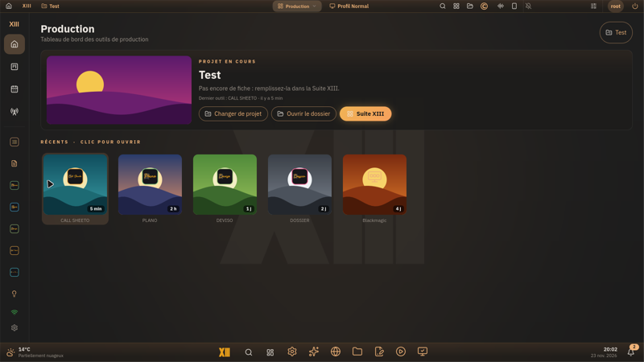
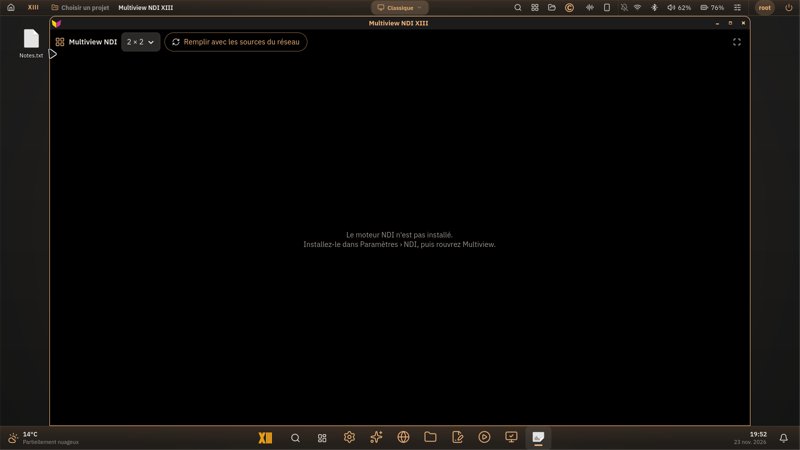
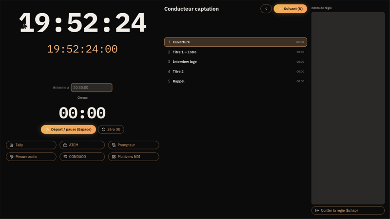
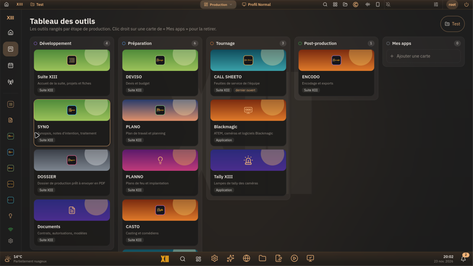

Le système qui tourne avec vous.
OS XIII réunit sur un seul PC la régie, le multiview, le tally, le dérushage et toute la Suite XIII. Léger sur un vieux portable, complet sur une station de montage, hors ligne quand le réseau du plateau lâche.

Tout ce qu'une régie demande, sans rien installer.
Les outils de la Suite XIII deviennent des applications du système : elles démarrent en une seconde, partagent le projet en cours et marchent sans Internet.
Multiview et tally
- Sources NDI® en mosaïque, VU-mètres et tally rouge / vert par vignette
- ATEM piloté en réseau : programme, preview, macros sur F1 à F12
- Stream Deck reconnu au branchement, pages de boutons XIII


Du tournage au rendu
- Dérushage avec rapport envoyé dans BACKUPO et DOSSIER
- Lecteur avec timecode, waveform et vectorscope
- Mode Tournage : performances maximales, aucune mise à jour ni veille pendant la captation
Un bureau pensé comme un tableau de projet.
Le mode Production range chaque projet en tuiles, avec son planning, ses fichiers et ses outils dans une barre à gauche. Un clic change de projet, tout le système suit.

Fichiers qui connaissent le projet
Récents du projet, recherche par type et par date, résumé d'un document par l'IA.
Agenda partagé
Google, Outlook ou CalDAV, rappels sur le bureau, événements par projet.
Sauvegarde 3-2-1
Disque, NAS et cloud, chiffrée, chaque jour, jamais pendant un tournage.
Accessible, sûr, rapide sur un PC de 2008.
de l'allumage au bureau prêt, mesuré sur des machines virtuelles de 2008 à aujourd'hui
de mémoire au repos pour l'édition légère, sur un PC de 1 Go
compte obligatoire : tout marche hors ligne, la reconnaissance vocale aussi
Accessibilité
Lecteur d'écran, loupe, sous-titres en direct de tout ce qui joue, dictée dans n'importe quelle appli.
Sécurité
Disque chiffré à l'installation, pare-feu actif, coffre de mots de passe compatible KeePass, antivol.
Logiciels
Flathub, Debian, AppImage et GitHub dans un seul magasin, mises à jour la nuit.
Deux éditions, une seule clé USB.
Légère
ISO de moins de 2 Go- Pour les PC anciens ou de 1 à 4 Go de mémoire
- Toute la Suite XIII et les outils de plateau
- Les gros logiciels s'installent d'un clic
Complète
ISO de 3,5 Go- Pour les stations de montage et PC récents
- Émulateurs, Claude Desktop, outils réseau avancés
- Voix française hors ligne déjà installée